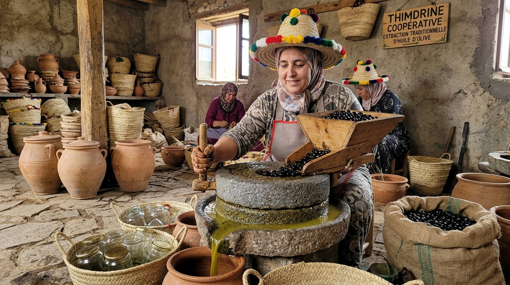
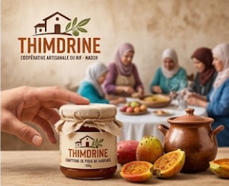
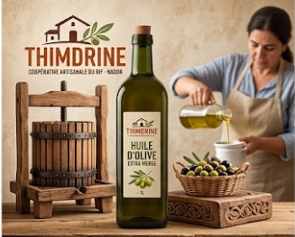
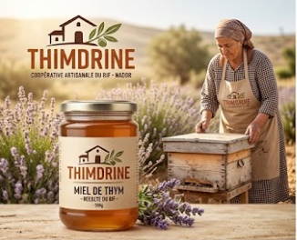

Miel de thym, huile d'olive et confiture de figue de barbarie : des produits du terroir sans additifs, du champ jusqu'à votre table.

Créée en 2015 dans la région de Nador, la coopérative Thimdrine réunit 25 femmes qui récoltent, transforment et conditionnent elles-mêmes leurs produits.
Nos ruches sont installées dans les collines de thym sauvage du Rif, nos oliviers poussent sur les terrasses familiales et nos figues de barbarie sont cueillies à la main chaque été.
Lire l'histoire de la coopérative →Les trois produits qui ont fait la réputation de Thimdrine sur les marchés de Nador.

180 DH de 500g

90 DH de 1L

100 DH de 250g